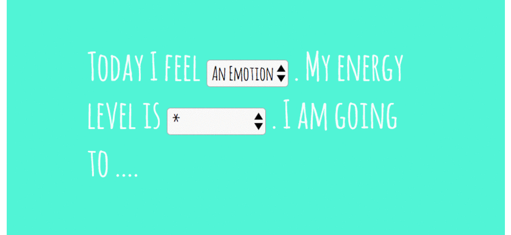
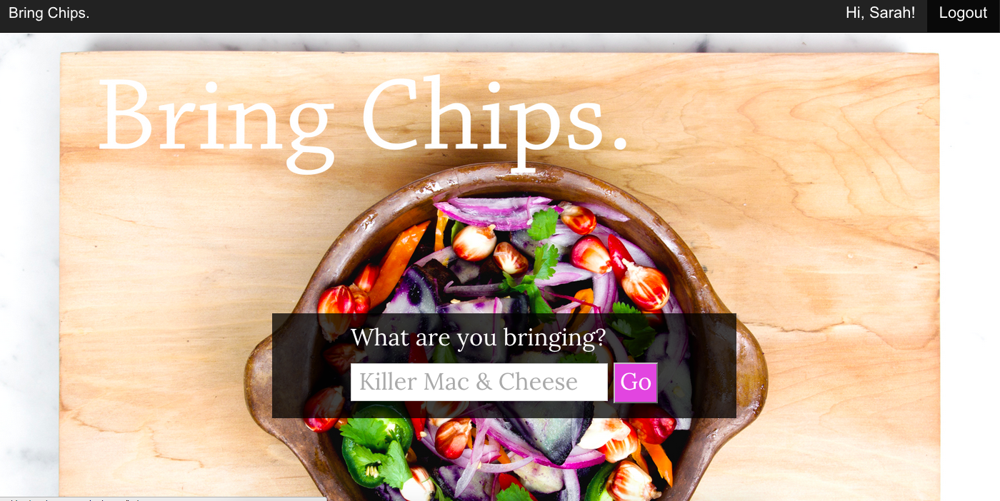
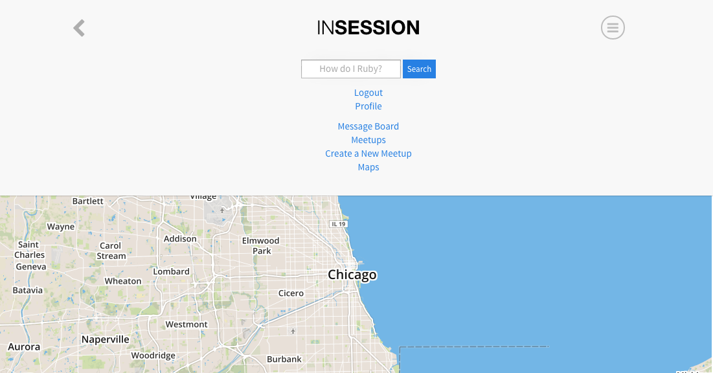

CODING PROJECTS
Not Another SAD Light
was commissioned by MIF, to show the stories that are left behind. I performed sentiment analysis on tweets and used the Philips Hue API to change the light in coordination with the emotion.
Source Code

DecisionsDecisions
Having trouble figuring out what to do today? Channel the powers of jQuery to make a decision based on your mood and energy level.
Source Code

Bring Chips
is a Rails application for those hosting or attending a potluck. Keep track of who's bringing what and avoid starvation.
Source Code
 InSession is a mobile application designed to connect online learners to in-person study groups. Students can also chat with their peers and seek help in the forum. Technologies utilized: Ruby on Rails, Postgres, Elastic Search, Faye, Mapbox and CoffeeScript.
farmersmarket
is a short exercise in Ruby to create a checkout system for market vendors. Testing with RSpec.
Source Code